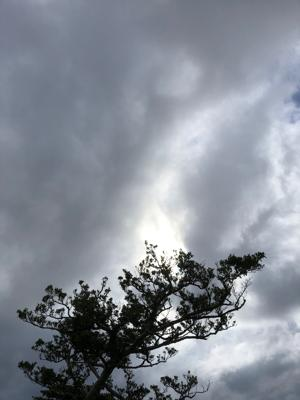
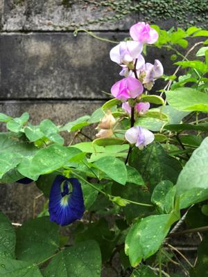

うるがいの話 ある日
最新: 中古本【うるがいの話 ある日】とは 一日だけのプログです
『うるがいの話』の最新一日だけのプログで、通信料が少なく経済的だ。カニの画像をクリックすると全ての日付が載る『うるがいの話』サイトを表示します
|
|
【うるがいの話】 うるがい(ｳﾙｶﾞｲ urugai)とは、『もずくがに』の名前でとても大きくなります。 |
|---|---|
|
|
【カミマヤーの話】 猫のことを方言でマヤーといいます。カミマヤー（kamimayaa）とは、神の猫のことです。 |
|
【たながぁの音楽】 たながぁ（ﾀﾅｶﾞｰ tanagaa）とは手長えびのことで、何種類かあり大きいのは車 エビぐらいになります。 |

|
【ぶながぁの話】 ぶながぁ(ﾌﾞﾅｶﾞｰ bunagaa)とは、赤い髪の毛、赤い身体、そして身長は１ｍ２０ｃｍ ぐらい、川の蟹を食べているの目撃された。場所は沖縄県国頭郡大宜味村のと ある村僕の隣近所に住んでいる爺さんから、聞いた話です。 |
|
|
【ギーマの話】 ギーマ(giima)とは、山原の里山に咲くスズランに似た、 花を付けます。実は食べられます、 気が付くと口の周りが紫になっています。 |
2022年11月12日 (土）中古本
16:35
 
Ａｍａｚｏｎから、中古本が届く。早速、見る。やはり、付録が付いていない
のは残念だが、無いよりましか。元の本の値段より、高い中古本を購入したの
は初めて経験である。
サウンドフォント活用ガイド (I/O別冊) ムック – 2000/5/1
税抜き 本体2500円
中古本の評価
コンディション： 中古品 - 可 - 特別付録CD-ROM Windows95/98付属品
が欠品しています。
全体的に使用感があります。迅速・丁寧な発送を心がけております。
商品の小計：￥ 3,791
配送料・手数料：￥ 250
注文合計：￥ 4,041
でも、Windows95/98の時代なので、さすがに内容が古い。ないより、マシ
である。後は、ネットを彷徨うだけである。やはり、『楽譜ソフトの音色を
良くしたい』なんて無謀な事をしているのだろうか。
外は、朝から暗く車を走らせると、自動点灯ではライトが点いてしまう。雷が
時々鳴る、雨は、、、、今から。
１６時１８分 ビットコインの総資産 ￥６、７４４↓